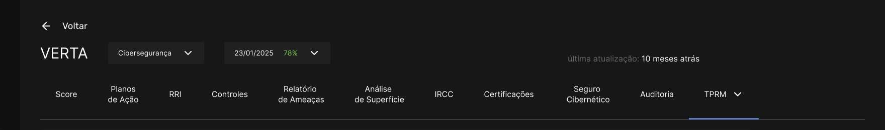
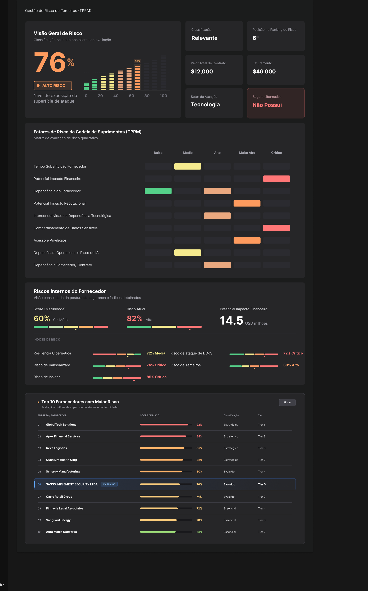
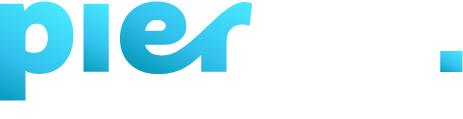

Risco com valor. Decisão com clareza.
Exposição técnica em impacto financeiro mensurável, o potencial de perda, o nível de maturidade e a probabilidade de um ataque ser bem-sucedido, sem depender de relatórios intermediários.
Verta converte dados complexos de riscos digitais em indicadores que Empresários, C-Level, Executivos e Conselhos, podem agir sobre eles.

/ˈvɛr.ta/ · substantivo próprio · tecnologia · SaaS
Plataforma SaaS que traduz complexidade técnica em decisões estratégicas claras, que qualquer decisor pode entender. Empresários, C-Level, Executivos e Conselhos.
Estrutura de conexão entre dados, risco e ação, permitindo que organizações compreendam, comparem e gerenciem sua maturidade e exposição de forma integrada.
Mecanismo de comunicação entre áreas técnicas e a liderança executiva, alinhando operações, compliance e estratégia por meio de linguagem acessível ao C-level e ao Conselho.
Entidade ou solução que organiza, mede e orienta a evolução de riscos digitais, transformando informação dispersa em inteligência acionável.
"O risco digital sempre existiu.
A clareza executiva para agir sobre ele, não."
Empresas globais perderam milhões por não conseguir transformar alertas técnicos em ação executiva a tempo. O problema não é falta de segurança, é falta de visibilidade e capacidade de decisão dos executivos.
Executivos simulados em videochamada por IA. Sem visibilidade executiva sobre ameaças emergentes, a ordem de transferência não teve contexto para ser questionada em tempo.
Multas regulatórias por controles inadequados de gestão de dados. Visibilidade contínua sobre maturidade de governança teria permitido agir antes da autuação.
Ransomware paralisou operações por semanas. O impacto tornou-se inevitável porque o board não tinha linguagem de negócio para agir preventivamente.
"O problema não é falta de segurança.
É falta de clareza executiva no
momento certo."
Riscos Digitais na pauta
Uma iniciativa do Gabinete de Segurança Institucional da Presidência da República, GSI.
Verta aprovada para o WebSummit Brasil e o Lisboa. Esteja lá conosco.
Feito para quem decide
Cada Decision Maker tem uma visão personalizada do risco, no nível de detalhe que precisa para agir com confiança.
Exposição estratégica e reputacional em tempo real. Riscos digitais na linguagem de negócios.
Risco financeiro, de continuidade e compliance. Sem precisar traduzir relatórios técnicos.
Visibilidade unificada de uma ou múltiplas entidades.
Automação de coleta, análise e reporte. Comunicação de risco para toda a liderança sem trabalho manual adicional.
O Diagnóstico
Ameaças digitais se tornaram questão central de estratégia de negócio. Mas Empresários, C-Level, Executivos e Conselhos, ainda carecem de visibilidade direta, dependendo de intermediários técnicos para entender um risco que é deles.
Dados não faltam.
Falta a tradução que move líderes a agir.
Como funciona
A Verta se integra ao ambiente da organização de maneira não invasiva, mapeia entendimentos, situação e regras dos riscos digitais e define o perfil de risco. Visão própria ou de terceiros, sem longos projetos; os primeiros indicadores chegam em horas ou dias, não meses.
Executivos, Conselho, Líderes técnicos ou Terceiros - cada perfil vê o risco na dimensão que importa para sua função. A Verta entrega contexto personalizado, não o mesmo relatório técnico para todos.
A plataforma monitora, traduz e atualiza automaticamente, os times técnicos e terceiros, aos executivos, jurídico, financeiro, até chegar ao Conselho. Uma única fonte de verdade sobre riscos digitais, sem fragmentação, sem silos, sem versões paralelas e com redução da assimetria de informação.
Por que a Verta é diferente
Três princípios que separam a Verta de qualquer solução tradicional.
Qualquer decisor, interno ou externo, acessa insights de riscos digitais sem depender de tradução técnica. Seja interno, do grupo ou de terceiros, cada um com a visão certa, no momento certo.
Coleta, análise e reporte automatizados. Sua equipe faz mais com menos e seus terceiros conseguem engajar de maneira escalável— sem relatórios manuais, sem planilhas paralelas, sem retrabalho.
Da Liderança técnica ao Conselho ou de Terceiros a Executivos, jurídico ou financeiro. Uma única fonte de verdade sobre riscos digitais, sem fragmentação, sem silos, sem versões paralelas.
A Verta nos deu clareza de onde estávamos e no que precisávamos investir para evoluirmos e nos protegermos. Agora sabemos exatamente os próximos passos de maior retorno e que tipo de soluções precisamos contratar.

A Verta desenvolveu a capacidade de escalar processos altamente complexos, reduzindo de forma consistente a assimetria técnica e informacional enfrentada pelos tomadores de decisão.
A Verta transforma a segurança em um direcionador estratégico, acelerando decisões baseadas em risco e otimizando investimentos com visão integrada entre negócio e parceiros.
A Verta viabilizou nossa oferta de SCRM Supply Chain Risk Management ao democratizar a gestão de risco de terceiros, permitindo cobrir todo o ecossistema de fornecedores com eficiência, apoiando na continuidade dos negócios e redução do risco sistêmico.
A Verta nos permite transformar avaliações de maturidade em decisões estratégicas, práticas e orientadas a dados, ajudando nossos clientes a evoluir seu nível de maturidade em segurança e governança de forma estruturada.
A Verta tem habilitado conexões consultivas a partir de métodos, práticas e mensurações acionáveis com nossos clientes. Temos conseguido de forma pragmática ligar riscos de negócios as ameaças cibernéticas, com intuito de mitigar exposições, aumentando patamar de maturidade e dando lucidez ao tomador de decisões.

A Plataforma em ação
Risco, impacto financeiro, maturidade e regulação reunidos em uma única leitura estratégica, clara, contínua, mensurável e orientada à decisão.

Exposição técnica em impacto financeiro mensurável, o potencial de perda, o nível de maturidade e a probabilidade de um ataque ser bem-sucedido, sem depender de relatórios intermediários.

Cada dimensão de risco é analisada de forma contextualizada, eliminando dados isolados e reduzindo a assimetria de informação entre áreas técnicas, executivos e conselho.

A IA da Verta transforma indicadores técnicos em planos de ação estratégicos, ajudando sua organização a reduzir riscos com mais velocidade e elevar continuamente sua maturidade digital.
Exposição técnica em impacto financeiro mensurável, o potencial de perda, o nível de maturidade e a probabilidade de um ataque ser bem-sucedido, sem depender de relatórios intermediários.
Cada dimensão de risco é analisada de forma contextualizada, eliminando dados isolados e reduzindo a assimetria de informação entre áreas técnicas, executivos e conselho.
A IA da Verta transforma indicadores técnicos em planos de ação estratégicos, ajudando sua organização a reduzir riscos com mais velocidade e elevar continuamente sua maturidade digital.
O que não é traduzido, não é governado.
A Verta mede e Contextualiza, mas a decisão é sua.
Gestão de Risco de Terceiros
TPRM — Third Party Risk Management — é a capacidade de enxergar, medir e gerenciar o risco digital que entra na sua organização pelos seus fornecedores, parceiros e prestadores de serviço. A Verta torna esse processo contínuo, automatizado e legível para qualquer decisor.


Ecossistema

Enquanto o regulatório avança e as ameaças escalam, organizações sem visibilidade executiva sobre riscos digitais operam no escuro. Estamos aqui para mudar isso.